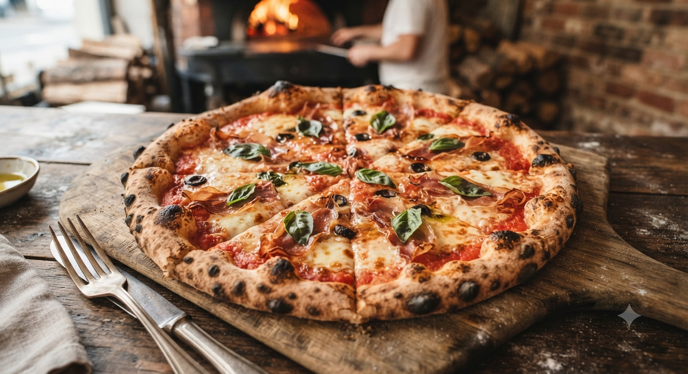
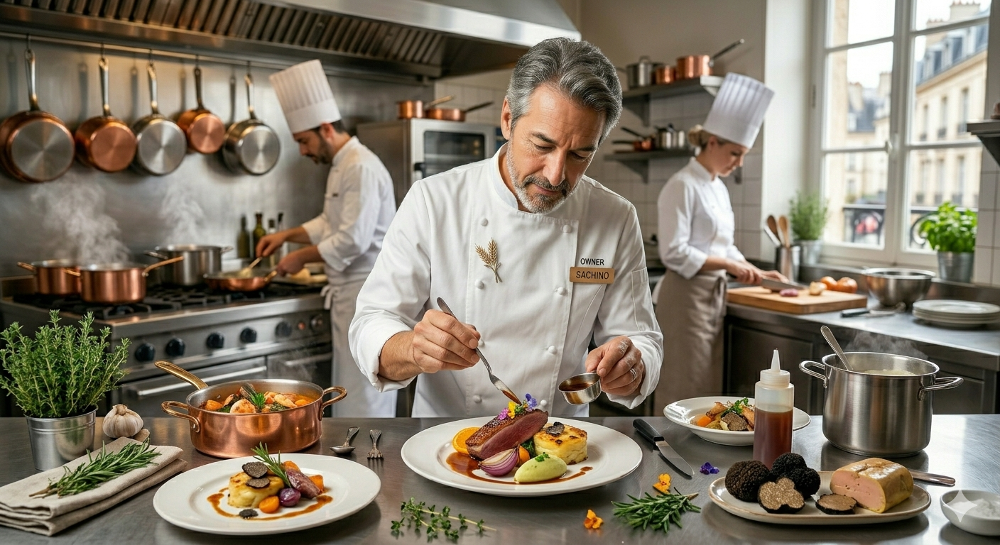

Authentic Stone Oven Pizzeria
山形駅前。ホテルオークラで培った技術と、
自家窯焚の炎が踊りなす「外サク中モチ」の至福。
Recommend: Margherita

オーダーを受けてから生地を伸ばし、一気に焼へ。高温の石窯で躍る生地が、独自の「サクッ、ふわっ」とした食感を生み出します。
店内に広がる香ばしい薪の香りと、焼前のライブ感。それもまた、Filoのご馳走です。

16歳でピッツァに魅了され、東京・ホテルオークラ等の名店で研鑽を積んできました。
「ピッツァは、生きものである」
店名「Filo（フィーロ）」はイタリア語で糸。山形駅前という場所で、こだわりの一皿を通じて笑顔の輪を広げることが私の使命です。カウンター越しに交わす会話、生地の焚ける音。そのすべてを大切にしています。
Voice of Our Guests
「イタリアのピッツェリアを思い出す旨さ」
クアトロフォルマッジを頼みましたが、焼き加減や具材との相性が絶妙。山形駅前でこんなに腕を抜けた店があるとは。一見の価値ありです。
「丁寧な接客と、職人のこだわり」
料理ごとに皿を変えてくださる心配りに感動。店員さんも親切で、帰りは出口で見送ってくれる丁寧さ。ピザ好きなら絶対行くべき。
山形駅前。日常を特別に変える、3つの誇り。
都内名店仕込みの配合。噛むほどに小麦の香りが鼻を抜ける、職人渾身の生地を体感してください。
地元山形の豊かな食材と、イタリア直送のチーズ。季節ごとに表情を変える「本日のピッツァ」は必見。
お一人様から貸切まで。洗練された空間で、ゆったりと流れる時間をお愉しみください。
Filoのピッツァを、もっと身近に。より多くのお客様へ届けるための新しい取り組みを準備中です。
ご自宅やオフィスに焼きたての香ばしさを直接お届け。職人のこだわりをそのまま食卓で味わえるデリバリーに対応予定です。
スマホから事前注文、事前決済。待ち時間ゼロでお店に立ち寄り、焼き立て熱々のピッツァをすぐ受け取れるスムーズなテイクアウトサービスです。